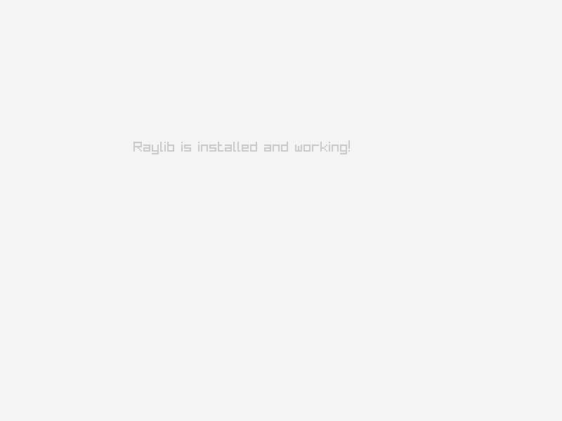

what is Raylib? how to setup it in a Linux machine? how to compile it from source? & how to use it to make games?
Table of Contents
what is Raylib?
- it is a game development library, that can be used with C or C++, or even a lot of other languages using a binding.
- it used to make 2D games & 3D games.
why you should use Raylib for your apps/games?
- super easy syntax & logic
- easy to install & to compile & to deploy
- 2D & 3D
- you can make cross-platform desktop apps with it as well
- fast & small binary size
- can be used in old openGL env
how to setup Raylib in a Linux machine?
- usually, you can install it just from your package manager,
but if you have an old graphic card, I can show you
Installing Raylib by compiling the source on Debian
- that bash script is for printing the pc specs:
#!/bin/bash
echo "$(whoami)@$(hostname)"
echo ""
echo "OS: $(. /etc/os-release; echo $NAME) $(uname -m)"
echo "Host: $(cat /sys/class/dmi/id/product_name | sed 's/ *$//') ($(cat /sys/class/dmi/id/product_version))"
echo "Kernel: $(uname -s) $(uname -r)"
uptime -p | sed 's/up/Uptime:/'
echo "Shell: $(basename "$SHELL") $BASH_VERSION"
echo "CPU: $(grep -m1 'model name' /proc/cpuinfo | cut -d: -f2 | sed 's/^ //') ($(grep -c '^processor' /proc/cpuinfo)) @ $(awk
-F: '/cpu MHz/ {printf "%.2f", $2/1000; exit}' /proc/cpuinfo) GHz"
i=1
lspci | grep -E 'VGA|3D' | while read -r line; do
gpu=$(echo "$line" | cut -d ':' -f3- | sed 's/^ //; s/ (rev.*//')
echo "GPU $i: $gpu"
i=$((i+1))
done
echo "Wifi adapter: $(lspci | grep -i 'network' | cut -d ':' -f3- | sed 's/^ //')"
echo "Locale: $LANG"it prints, when I run it in my machine
unes@mx-linux
OS: Debian GNU/Linux x86_64
Host: EasyNote MH45 (LX.B190X.005)
Kernel: Linux 6.12.94+deb13-amd64
Uptime: 14 minutes
Shell: fish 5.2.37(1)-release
CPU: Pentium(R) Dual-Core CPU T4200 @ 2.00GHz (2) @ 1.99 GHz
GPU 1: Intel Corporation Mobile 4 Series Chipset Integrated Graphics Controller
Wifi adapter: Ralink corp. RT2790 Wireless 802.11n 1T/2R PCIe
Locale: en_US.UTF-8-
nano fet.sh - paste the code & save & exit
-
chmod +x fet.sh -
./fet.sh
now you know what is the name of your hardware, & then you can search what is the OpenGl version, or how much vram you have
1. Install Build Dependencies
Open your terminal and install the compiler toolchain, CMake, Git, and necessary X11/OpenGL development libraries via apt:
sudo apt update
sudo apt install build-essential git cmake \
libasound2-dev libx11-dev libxrandr-dev libxi-dev \
libgl1-mesa-dev libglu1-mesa-dev libxcursor-dev \
libxinerama-dev libwayland-dev libxkbcommon-devmaybe you feel uncomfortable because you write things you don't understand, I want to tell you that it's fine, you don't have to understand everything that came before you, because it's abstracted on purpose, just focus on one thing, "setuping the programming env", & then you can move to another thing, don't overwhelm yourself 💖
2. Clone and Build Raylib
Clone the official Raylib repository, configure CMake to target OpenGL 2.1, compile using multiple cores, and install system-wide:
# Clone the repository (latest commit)
git clone --depth 1 https://github.com/raysan5/raylib.git
cd raylib
# Create and enter build directory
mkdir build && cd build
# Configure build with OpenGL 2.1 for legacy GPUs
cmake -DOPENGL_VERSION="2.1" -DBUILD_SHARED_LIBS=ON ..
# Compile using 2 CPU cores
make -j2
# Install system-wide to /usr/local
sudo make install
3. Update Shared Library Cache
Register the newly installed libraylib.so with the dynamic linker:
sudo ldconfig
4. Test Installation
Create a minimal test program to verify that the installation and display initialization work properly.
Create test.c:
#include "raylib.h"
int main(void) {
InitWindow(800, 600, "Raylib Installation Test");
SetTargetFPS(60);
while (!WindowShouldClose()) {
BeginDrawing();
ClearBackground(RAYWHITE);
DrawText("Raylib is installed and working!", 190, 200, 20, LIGHTGRAY);
EndDrawing();
}
CloseWindow();
return 0;
}Compile Command:
gcc test.c -lraylib -lGL -lm -lpthread -ldl -lrt -lX11 -o raylib_testRun:
./raylib_test
Quick Reference / Troubleshooting
| Issue | Cause | Solution |
|---|---|---|
error while loading shared libraries: libraylib.so | Linker cache not updated | Run sudo ldconfig |
implicit declaration of function 'SetCameraMode' | Raylib 5.0+ API change | Use UpdateCamera(&camera, CAMERA_FIRST_PERSON) directly |
| Raylib fails to initialize window | OpenGL driver mismatch | Ensure CMake was configured with -DOPENGL_VERSION="2.1" |
Challenge:
explaining the challenge:
I challenge you to make the same program as below, it have about 22 line, you can do it on less or more, it does not matter, what matters is the result
- Size: 16.3 kB
- RAM : 77 mb
how you can solve it?
- Drawing the circle is done by
DrawCircle(x, y, size, LIGHTGRAY). - Animation is done by variables and adding 1 to there values inside the while loop.
- The collision is done by
if (){}&GetScreenWidth()&GetScreenHeight().